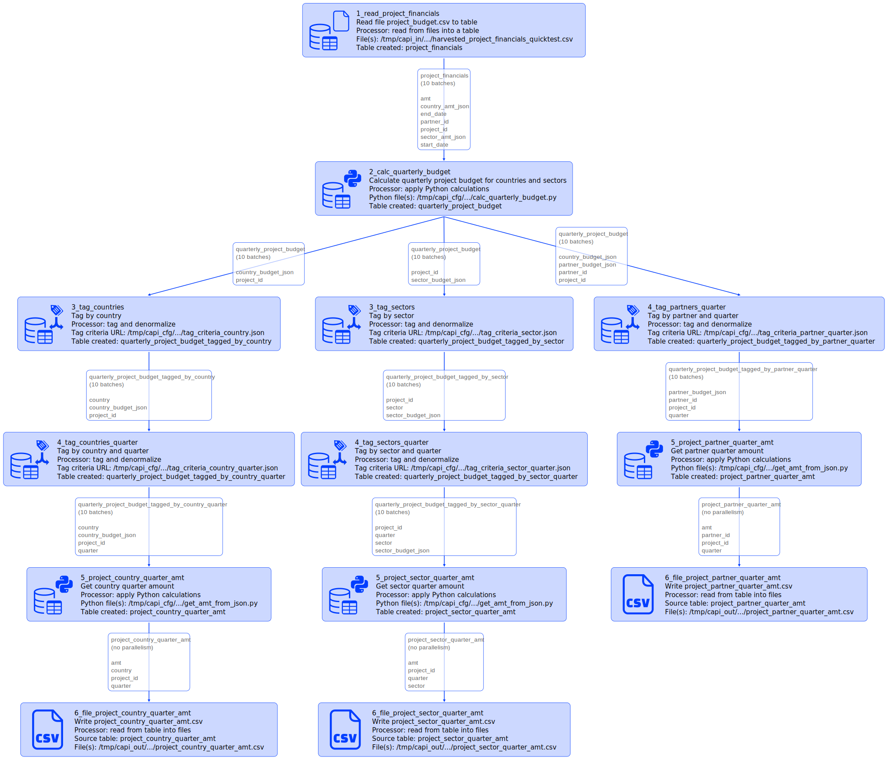
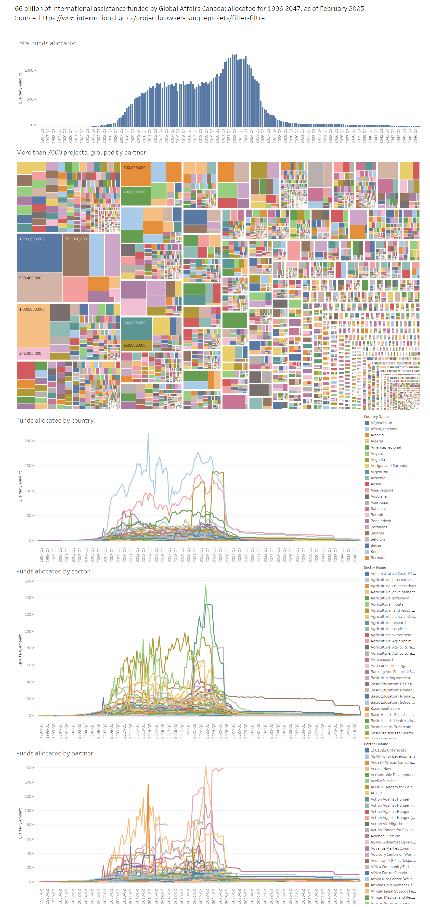

2024-02-25
Capillaries: Analyzing $66B Allocated by Global Affairs Canada (1996–2047)
International assistance "projects" funded by Global Affairs Canada
The Global Affairs Canada website provides access to some information about the "projects" it funds with taxpayers' money. As of February 2025, the site lists details about 7769 "projects", including:
- start and end date
- total amount allocated
- distribution by country/region
- distribution by sector
The funds allocated for each "project" are channeled through a "partner" organization. As of February 2025, the website provides information on 1,258 "partners." Some "partners" are involved in the allocation of funds for multiple "projects."
An integration test, "global_affairs," was recently added to Capillaries. This test processes data obtained from the website, preparing it for further analysis using tools like Tableau. All data files can be downloaded here (6mb).

What does it do, exactly?
For each "project," the global_affairs integration test transforms JSON data containing country/region fund distribution and sector fund distribution into a quarterly time series suitable for data analysis. For example, to analyze fund allocation by country, the following "project" record:
| project_id | partner_id | amount | start_date | end_date | country_amt_json |
|---|---|---|---|---|---|
| p010807001 | 29578 | $1,000,000,000 | 20220331 | 20470331 | {"IN": 210000000.0, "PH": 210000000.0, "ID": 210000000.0, "ZA": 210000000.0, "DO": 80000000.0, "MK": 80000000.0} |
is transformed into this set of rows:
| project_id | country_code | quarter | amount |
|---|---|---|---|
| p010807001 | DO | 2022-Q1 | 8760.40 |
| p010807001 | ID | 2022-Q1 | 22996.06 |
| p010807001 | IN | 2022-Q1 | 22996.06 |
| p010807001 | MK | 2022-Q1 | 8760.40 |
| p010807001 | PH | 2022-Q1 | 22996.06 |
| p010807001 | ZA | 2022-Q1 | 22996.06 |
| p010807001 | DO | 2022-Q2 | 797196.67 |
| p010807001 | ID | 2022-Q2 | 2092641.26 |
| p010807001 | IN | 2022-Q2 | 2092641.26 |
| p010807001 | MK | 2022-Q2 | 797196.67 |
| p010807001 | PH | 2022-Q2 | 2092641.26 |
| p010807001 | ZA | 2022-Q2 | 2092641.26 |
| p010807001 | ... | ... | ... |
| p010807001 | DO | 2047-Q1 | 788436.27 |
| p010807001 | ID | 2047-Q1 | 2069645.20 |
| p010807001 | IN | 2047-Q1 | 2069645.20 |
| p010807001 | MK | 2047-Q1 | 788436.27 |
| p010807001 | PH | 2047-Q1 | 2069645.20 |
| p010807001 | ZA | 2047-Q1 | 2069645.20 |
Quarterly budgets by sector and by partner are calculated in a similar way. The full transcript of what each script node produces in Cassandra can be found here. Additionally, the full DAG of transformations implemented in the global_affairs test script is shown below (Capillaries introduced a new diagram-drawing engine in version 1.1.23):
The dataset size is relatively small by 2025 standards: the quarterly time series dataset for countries contains about 800K rows, partner and sector datasets each contain approximately 400K rows. Once again, all data files can be downloaded here (6mb).
What can I do with these time series datasets?
Use your favorite tool - and your imagination. A Tableau enthusiast used the global_affairs test results to create this visualization:
The interactive Tableau Public visualization is available here.